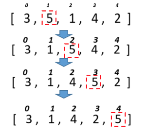

Задачa 4.
Для розглянутих методів сортування спробувати вивести етапи сортування шляхом виведення відповідних таблиць за зразком.
Тобто кожного разу після обміну елементів вивести поточний стан масиву на екран.

Розв'язок.